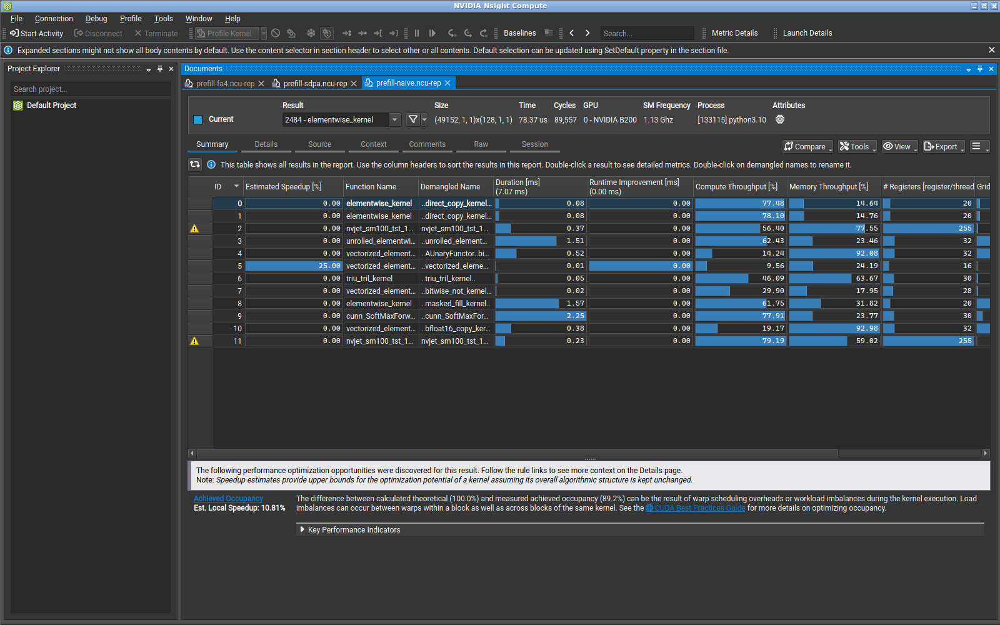
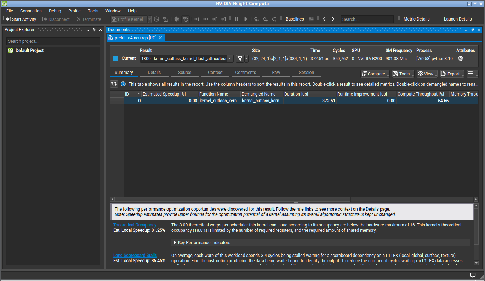
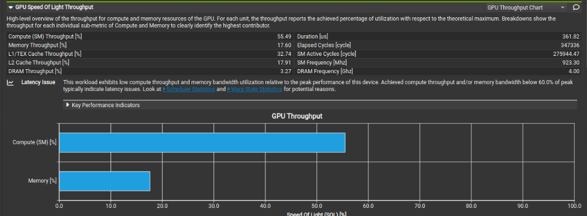
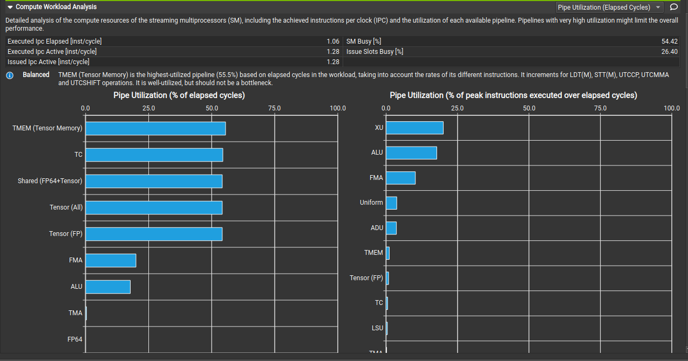
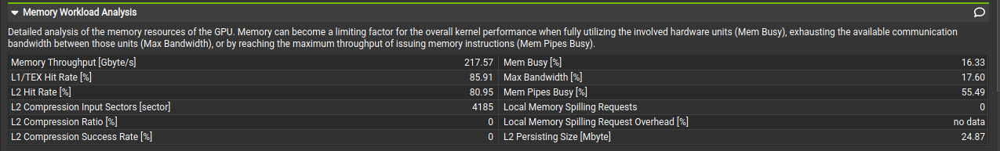
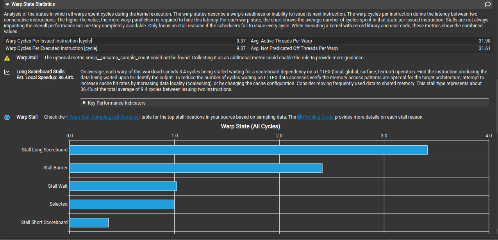
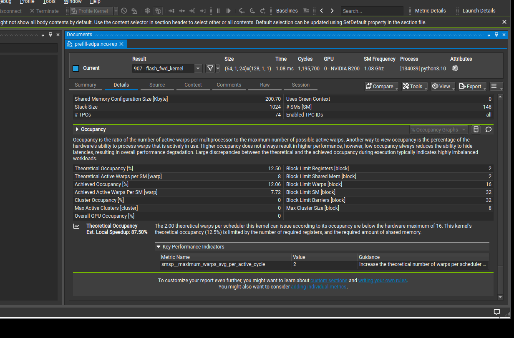
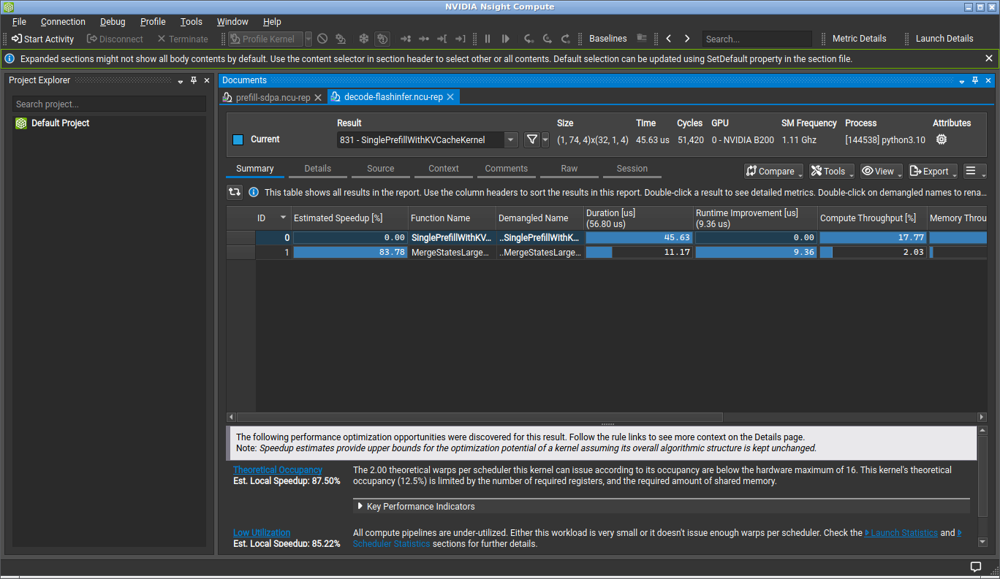

Default softmax kernel in PyTorch SDPA, vLLM, SGLang — Qwen3, Llama, Gemma, and other GQA models. Not linear attention.
1.How
FLOPs stay the same. The speedup is skipping the score-matrix round-trip through HBM.
Reminder — one head:
scores: queries × keys · grows with sequence²
Naive · scores in HBM
Flash · scores in registers
The wait is the red matrix.
Naive: every score written.
Flash: one live tile. The rest never exist.
2.How much
Qwen3.8-27B, one softmax layer, batch 1, 24 query heads, float32 scores. Flash only runs on these 16 GQA layers — the other 48 are Gated DeltaNet. Move sequence length.
HBM · off-chip DRAM
Entire score matrix
384 MB
Naive writes it here, then reads it back.
Registers · on-chip
One score tile
32 KB
Flash overwrites this every key tile. Size does not grow.
At 8k tokens one softmax layer is 6 GB of scores. Sixteen such layers in this model.
3.The tile walk
One query, four keys. Already-scaled scores \([1,\ 3,\ 0,\ 2]\). Values \([10,\ 20,\ 30,\ 40]\). Same softmax as writing the full row — one score at a time.
Filled = live score. Dashed = already folded into the running output.
Q stays on-chip. K and V stream. The score slot is overwritten.
Only the query is reused. Scores never accumulate. After the last key, \(o \approx 24.2\) — the same mix as a full-row softmax.
The fold-in is online softmax: keep a running max, a running sum of exponentials, and a running weighted mix of values. A new tile updates those three. If its max is bigger, rescale the old sum and mix first, then add. You never need the rest of the row.
\(x\) this score, \(v\) this value. \(m\) running max, \(\ell\) running exp-sum, \(O\) running mix. Then \(o = O/\ell\). Flash does this per key-tile. The algebra is in the guides below.
Same loop on a real block: one query tile, many key tiles.
Speedup is HBM trips, not FLOPs. Q is reused. K and V stream. Scores are a tile in registers, folded in with online softmax. Hopper and Blackwell only change the multiplier for the same walk.
4.Performance
First, the clock. Lower is faster. Every dot is the mean latency for the same Qwen3.8-27B full-attention shape on one B200.
We compare four implementations: an eager PyTorch baseline, PyTorch scaled dot-product attention (SDPA), FlashAttention-4, and FlashInfer. FlashInfer is tested in both phases: its fused single-prefill kernel for prefill and its tensor-core single-decode kernel for decode.
Model dimensions that matter here: hidden size 5,120; 64 layers, of which 16 are full attention; 24 query heads; 4 key/value heads; head dimension 256; six query heads share each key/value head.
Prefill latency
CUDA-event mean latency in milliseconds · logarithmic y-axis · bfloat16 · batch 1 · 24 query heads · 4 key/value heads · head dimension 256. Hover for the exact value.
At 4k tokens, FlashAttention-4 takes 0.190 ms: 27.8× faster than the eager materializing baseline at 5.291 ms, and 3.4× faster than PyTorch SDPA at 0.639 ms. At 8k, it is 0.599 ms versus 2.279 ms for SDPA — 3.8× faster.
What gives prefill the speedup?
Stop sending the full score matrix through HBM
The eager baseline launches 12 GPU kernels, explicitly expands grouped key/value heads, and writes the growing score matrix out before reading it back. At 4k, 91.5% of its instrumented time is outside the two matrix multiplies — in expansion, masking, conversion, softmax, and layout work. FlashAttention fuses the walk from Section 3 into one kernel; together those avoided costs produce the measured 27.8× gain over this diagnostic baseline.
Use fewer on-chip instructions to do the same work
SDPA is already fused, so both kernels avoid the full score matrix. At 4k they move about the same HBM bytes — 79 MB for FA4 and 84 MB for SDPA — and neither reaches 4% of peak HBM throughput. The extra 3.4× gain is therefore on-chip, not another HBM saving.

The eager baseline is visibly twelve kernels. Score conversion, masking, standalone softmax, output conversion, and grouped-head expansion consume 91.5% of its profiled duration; the two matrix multiplies take only 0.60 ms.
- Twelve launches expose the full score matrix. Conversion, masking, softmax, and layout work become separate global-memory round trips.
- The matrix multiplies are not the main problem. They consume only 0.60 ms; everything around them consumes 91.5% of the profiled call.

The comparison is now literal: the eager call above has twelve result rows; fused FlashAttention-4 has one. Every profiler section below describes this one complete launch.
- All three optimized prefill implementations are fused. SDPA, FlashAttention-4, and FlashInfer each replace the eager call's twelve launches with one.
- Fusion explains the first gain; the kernel design explains the rest. FlashAttention-4 is still about 3× faster than the other fused kernels, so the next comparison is instruction and on-chip-memory efficiency.
The profiler shows what changed. At 4k, these rows are FA4 / SDPA:
The issue rate is the same; the amount issued is not. FlashAttention-4's B200 path keeps tensor-core accumulators in Tensor Memory and uses asynchronous matrix operations. Its ordinary load/store pipeline is active for 0.43% of elapsed cycles, versus 22.17% for SDPA. Fewer staging instructions produce nearly the same 3× ratio as the measured time.
What the profiler sections show
Speed of Light: fewer cycles, not a higher clock

Speed of Light reports each hardware path as a percentage of its peak while the kernel runs.
- FlashAttention-4 needs 3.4× fewer GPU cycles: 347,336 versus 1,195,700 for SDPA and 1,316,638 for FlashInfer.
- Compute utilization is similar: 55.49%, 58.91%, and 55.66%. The slower kernels keep comparable compute hardware busy for roughly three times longer.
- The separation is on-chip movement: the busiest memory path is 17.60% for FlashAttention-4, 68.77% for SDPA, and 64.02% for FlashInfer. Off-chip DRAM is only 1–3%.
Compute Workload: one-third the instruction stream

The left chart counts cycles occupied; the right counts issued instructions. Tensor Memory keeps dedicated hardware busy with comparatively few instructions.
- Instruction count: 61 million for FlashAttention-4, 186 million for SDPA, and 175 million for FlashInfer.
- Instruction rate stays close: 1.28, 1.27, and 1.12 instructions per active cycle. FlashAttention-4 wins by asking the schedulers to do less work.
- Only FlashAttention-4 uses Tensor Memory: 55.49% utilization, while its ordinary load/store pipeline is 0.43% versus 22.17% for SDPA and 20.43% for FlashInfer.
Tensor Memory is a dedicated ~256 KB on-chip store per streaming multiprocessor for fifth-generation tensor cores. A thread can launch a large asynchronous matrix multiply whose accumulators land there instead of being distributed through thread registers. The profile links that path to fewer instructions; an otherwise-identical non-Tensor-Memory kernel would be needed to isolate its exact contribution.
Memory Workload: HBM is not the remaining prefill gap

This section separates byte rate, cache hits, request bandwidth, memory-instruction pipes, and spilling.
- Measured HBM traffic is similar: about 79 MB for FlashAttention-4, 84 MB for SDPA, and 83 MB for FlashInfer.
- Cache routing differs: FlashAttention-4 hits on 85.91% of measured L1/TEX lookups; SDPA and FlashInfer mostly reach the chip-wide L2 cache, where both hit about 94%.
- Shared memory is a capacity trade: FlashAttention-4 reserves 197.5 KB per block versus 98.3 KB for the other fused kernels. Allocation limits residency; it is not a traffic measurement.
Warp State: longer waits can still win

The bars divide the average cycles between issued warp instructions by the reason the next instruction could not issue.
- FlashAttention-4 waits longer: 9.37 cycles per issued instruction versus 6.06 for SDPA and 6.83 for FlashInfer. Fewer, heavier instructions matter more than issuing frequently.
- Its main costs are long-scoreboard dependencies (3.41 cycles) and block barriers (2.41). Those are the costs of its large cooperative tiles.
- SDPA and FlashInfer show more conventional dependency pressure: fixed-latency waits are 1.93 and 2.09 cycles; short-scoreboard waits are 1.18 and 1.63.
Launch and Occupancy: prefill has enough blocks

Occupancy is resident warps as a percentage of the hardware maximum. It is a latency-hiding resource, not a performance score.
- All fused prefill kernels supply 5.19 residency waves. FlashAttention-4 launches 768 large blocks; SDPA and FlashInfer launch 1,536 smaller blocks. None leaves multiprocessors empty.
- FlashAttention-4 uses one 384-thread block per multiprocessor; SDPA and FlashInfer use two 128-thread blocks. Achieved occupancy is 18.67%, 12.06%, and 11.97%.
- Low occupancy is deliberate: FlashAttention-4 spends almost the full register and shared-memory budget on one larger work unit.
Decode is a different amount of work
Decode latency
Each dot is the CUDA-event mean latency for one new query token over the existing key/value cache. Hover for the exact value.
At a 32k cache, FlashInfer takes 0.039 ms; SDPA takes 0.054 ms; FA4 takes 0.307 ms; the eager baseline takes 0.862 ms.
The cause is parallelism: FA4 launches 48 blocks for 148 SMs. FlashInfer splits the cache across 296 blocks, enough for two waves across the chip. One-token decode is too small for FA4's large prefill-shaped work unit.

FlashInfer decode is two launches: a 296-block attention kernel (45.63 µs in Nsight) and a 24-block merge (11.17 µs). SDPA uses a 256-block main kernel plus a 6-block combine.
- FA4 underfills decode: 48 blocks cover only 48 of 148 streaming multiprocessors and reach 3.93% of HBM throughput.
- SDPA fixes coverage by splitting the key/value cache: its main kernel reaches 2.41 TB/s and 36.25% of HBM throughput, then pays for a small combine.
- FlashInfer makes the split finer and merge cheaper: 296 main blocks reach 3.02 TB/s and 45.54% of HBM throughput; 24 merge blocks add 11.17 µs.
- The eager baseline copies before computing: grouped-head expansion consumes 84.3% of its profiled decode duration.
Prefill: FlashAttention wins first by eliminating the score-matrix round-trip, then FA4 gains again from Blackwell Tensor Memory and fewer staging instructions. Decode: use a kernel that exposes enough parallel work; the large FA4 prefill kernel underfills the GPU.
References
- Dao et al., FlashAttention (arXiv 2205.14135) — IO-aware tiling.
- Milakov & Gimelshein, Online normalizer calculation for softmax (arXiv 1805.02867).
- Dao, FlashAttention-2 (arXiv 2307.08691).
- Shah et al., FlashAttention-3 (arXiv 2407.08608).
- Earlier: GQA, MLA, linear attention.
How to cite this post
Dong, S. (2026). How Flash Attention Speeds Up — and By How Much.
https://simondong1.github.io/flash-attention.html